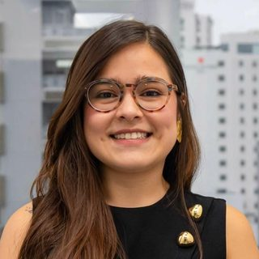
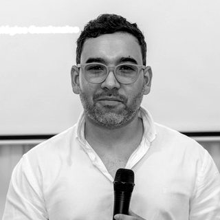
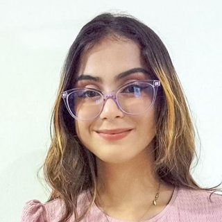

Investigación de usuario para entender y mejorar el servicio de los taxistas del Aeropuerto de Cartagena
Un programa de consultoría de 12 semanas, con cinco semanas de trabajo de campo, para comprender cómo trabajan, se organizan y se relacionan con los pasajeros los taxistas del aeropuerto, y co-diseñar con ellos un portafolio priorizado de mejoras en organización, servicio y capacitación.
Entendimiento de la solicitud
El taxista del aeropuerto suele ser el primer contacto humano del visitante con Cartagena. Su trato, la tarifa que cobra y la forma en que conduce moldean la percepción de la ciudad como destino desde los primeros minutos del viaje.
Las decisiones sobre este servicio, sin embargo, se toman con frecuencia sin conocer a fondo cómo opera el día a día del conductor: cómo se forman las filas, quién asigna los pasajeros, cuánto se espera y qué presiones explican las conductas que generan quejas.
Antes de proponer capacitaciones o esquemas de organización, el estudio busca responder con evidencia qué pasa, por qué pasa y qué se puede mejorar, para que las soluciones nazcan con la legitimidad del gremio y no fracasen por baja adopción.
Comprender el contexto, los comportamientos y las necesidades de los taxistas del Aeropuerto de Cartagena para identificar, enumerar y priorizar oportunidades de mejora en organización, servicio y capacitación.
- Quejas aisladas sin explicación de fondo
- Capacitaciones diseñadas desde afuera
- Comportamientos, dolores y motivaciones documentados
- Oportunidades priorizadas por impacto y factibilidad
- Plan de organización y capacitación construido con los conductores
Taxistas del aeropuerto
Junto con los actores que influyen en su comportamiento, para entender el sistema completo.
12 semanas en 3 fases
Preparación, implementación en campo y procesamiento, cada fase con un entregable revisado por el cliente.
Oportunidades priorizadas
Cada hallazgo respaldado por más de un método y cada propuesta validada con los conductores.
Soluciones adoptables
Propuestas de organización y capacitación que el gremio reconoce como propias.
Preguntas que guían el estudio
Se ajustan con el cliente en la Fase 1¿Cómo se organizan hoy los turnos, las filas y la asignación de pasajeros?
¿Qué conductas generan quejas (tarifa, trato, idioma, vehículo) y qué las provoca?
¿Qué motiva o desmotiva a los conductores a formarse y mejorar su servicio?
¿Qué tensiones existen entre taxistas, plataformas, autoridades, operador y pasajeros?
Actores del sistema
Identificados hasta ahora · el mapeo inicial de actores puede ampliar la listaUn programa de investigación en tres fases
El trabajo de campo es el momento más visible, pero el valor del estudio depende de una buena preparación y de un procesamiento riguroso. Por eso el programa incluye un antes, un durante y un después, cada uno cerrado con un entregable que el cliente revisa antes de avanzar.
Preparación
- Foco, preguntas clave, hipótesis y criterios de éxito acordados con el cliente
- Revisión de normativa, tarifas oficiales, estadísticas de pasajeros, quejas y estudios previos
- Conversaciones con informantes clave y mapeo inicial de actores del ecosistema
- Estimación del número óptimo de entrevistas y encuestas
- Instrumentos de campo, protocolo ético y piloto
- Calendario de campo por franjas de alta y baja demanda
Implementación en campo
Procesamiento
- Inventario de comportamientos, dolores y motivaciones
- Personas, mapas de recorrido y mapa del sistema
- Priorización de oportunidades por impacto y factibilidad
- Informe final, hoja de ruta y plan de capacitación
- Presentación al cliente y devolución a los taxistas
Cerca de 1.090 horas de trabajo profesional, el 60% de ellas en campo
La calidad de los hallazgos depende del tiempo que el equipo pasa junto a los conductores. Por eso la mayor parte de la dedicación se concentra en las cinco semanas de campo, sin descuidar el diseño previo ni la síntesis.
- Foco y revisión documental40 h
- Informantes clave y mapa de actores32 h
- Instrumentos, protocolo ético y piloto56 h
- Plan de investigación y reuniones16 h
- Observación por franjas160 h
- Entrevistas individuales y grupales240 h
- Inmersión y voz del pasajero176 h
- Talleres de co-diseño56 h
- Informe de avance de campo32 h
- Análisis y agrupación de hallazgos96 h
- Personas, mapas y matriz de oportunidades104 h
- Informe final y hoja de ruta64 h
- Presentación y devolución16 h
Estimación de referencia para el equipo de cinco roles descrito en la sección Equipo.
Investigación de usuario en cuatro momentos
Nuestra metodología se fundamenta en el marco de investigación de usuario de MIT D-Lab y en los enfoques de diseño centrado en las personas. Entendemos el servicio de taxi del aeropuerto como un sistema en el que conductores, gremios, operador, autoridades y pasajeros se influyen mutuamente; por eso el estudio escucha a todos, triangula lo que dicen con lo que se observa y construye las soluciones junto con quienes las van a adoptar.
El volumen de información crece en la preparación, se multiplica en el campo con varios métodos simultáneos y se condensa al final en insights y herramientas para el diseño. Cada hallazgo se apoya en datos de más de un método.
Selecciona un momento para ver qué pasos lo componen.
Foco del estudio e instrumentos
Foco de la investigación
Preguntas clave, hipótesis y criterios de éxito acordados con el cliente.
Investigación secundaria
Normativa de taxis, tarifas oficiales, estadísticas de pasajeros, quejas registradas y estudios previos.
Informantes clave y mapa de actores
Conversaciones con líderes gremiales, operador y autoridades para entender el terreno.
Instrumentos, ética y piloto
Instrumentos de campo, consentimiento informado y prueba piloto en el aeropuerto.
Observación, indagación, inmersión y co-diseño
Observación estructurada
Registro en las zonas de llegada y espera: tiempos, interacciones, cobros y conflictos.
Entrevistas individuales y grupales
Conversaciones en los tiempos de espera y grupos por antigüedad, vinculación y turno.
Inmersión y voz del pasajero
Jornadas acompañadas, viajes como pasajero y encuestas a viajeros nacionales y extranjeros.
Talleres de co-diseño
Conductores y actores clave validan los hallazgos y prototipan soluciones.
De los datos a las decisiones
Análisis y agrupación de hallazgos
Los datos de todos los métodos se cruzan y se agrupan en patrones.
Personas y mapas de recorrido
Arquetipos de taxistas y pasajeros, y el recorrido del servicio con sus puntos de dolor.
Priorización de oportunidades
Las oportunidades se ordenan por impacto y factibilidad.
Hoja de ruta y devolución
Informe final para el cliente y sesión de devolución con los taxistas.
Entregables
Informe final y hoja de ruta para mejorar el servicio de taxis del aeropuerto
Recoge las oportunidades de mejora priorizadas por impacto y factibilidad, las propuestas de organización de filas, turnos y asignación, un plan de capacitación por módulos pensado para los conductores y los requerimientos de diseño para una eventual fase de implementación.
Evidencia y herramientas de diseño
Inventario de comportamientos
Lista clasificada de comportamientos, dolores y motivaciones, con su frecuencia y evidencia.
Herramientas de síntesis
Personas, mapas de recorrido, mapa del sistema y matriz de oportunidades.
Socialización
Presentación de resultados al cliente y sesión de devolución a los taxistas.
Durante el proceso se entregan además el Plan de investigación (E1, semana 3) y el Informe de avance de campo (E2, semana 6).
Requerimientos y cronograma
- 01ClientePermisos de acceso a las zonas de llegada y espera del aeropuerto, gestionados con el operador desde la semana 1.
- 02ClienteAval de los líderes gremiales y apoyo en la convocatoria de los conductores.
- 03ClienteSalón para los talleres de co-diseño y la sesión de devolución.
- 04ClienteAcceso a información: estadísticas de pasajeros, registro de quejas y un enlace para las reuniones de revisión.
- 05InngeniosEquipo de investigación, facilitación y diseño de información, con instrumentos, kits de co-diseño y materiales impresos.
- 06InngeniosLogística de campo: transporte del equipo, incentivos a los participantes y refrigerios de los talleres.
Registro digital de campo. Las observaciones, entrevistas y encuestas se capturan en herramientas digitales, lo que permite compartir avances con el cliente durante el campo y acelerar la síntesis.
| Concepto | Detalle |
|---|---|
| Duración | 12 semanas, con 5 semanas de campo |
| Modalidad | Presencial, participativa |
| Lugar | Aeropuerto Internacional Rafael Núñez, Cartagena |
| Dirección | Cristian Torres, Director de Inngenios |
| Gerencia | Daniela Martínez, Gerente de proyecto |
Hitos del cronograma
Fechas tentativas. El campo va del 8 de febrero al 12 de marzo de 2027; los entregables se revisan con el cliente en las semanas 3, 6, 9, 11 y 12.
Ética y gestión de riesgos
Participación voluntaria, consentimiento informado y anonimato · Ley 1581 de 2012| Riesgo | Cómo lo mitigamos |
|---|---|
| Desconfianza de los conductores hacia el estudio | Aval previo de los líderes gremiales, presentación transparente del propósito y devolución de resultados |
| Acceso restringido a zonas del aeropuerto | Permisos gestionados con el operador en la semana 1 |
| Respuestas sesgadas por temor a sanciones | Entrevistas anónimas, lejos de supervisores, y triangulación con la observación. Los hallazgos no se usan para sancionar a nadie |
| Temporada alta que reduce la disponibilidad | Campo en febrero y marzo, entrevistas cortas en los tiempos de espera y calendario flexible |
| Conflictos con plataformas u otros actores | Moderación neutral y espacios separados por grupo |
Equipo del proyecto

Daniela Martínez
Abogada con Máster en Gestión de la Innovación y gerente de proyectos. Asesora legal de micro, pequeñas y medianas empresas, y consultora en sostenibilidad e impacto social para organizaciones como Weber Shandwick y la ONG El Sembrador.
En este proyecto lidera el cronograma y la relación con gremios, operador y autoridades, acompaña los talleres de co-diseño con los conductores y vela por el protocolo ético y el tratamiento de datos.
- Escenarios de construcción de ciudad y eventos de alto impacto
- Creación y consolidación de comunidades de emprendimiento y networking
- Proyectos de impacto social y participación democrática con enfoque joven
- Director de proyecto · 20% durante las 12 semanas
- Investigador(a) líder en diseño centrado en usuario · tiempo completo, 12 semanas
- Dos investigadores(as) de campo, entre ellas María Fernanda García · tiempo completo, semanas 4 a 8
- Gerente de proyecto y facilitadora de co-diseño · seguimiento continuo y talleres
- Diseñador(a) de información · semanas 9 a 12

Cristian Torres
Ingeniero Industrial y Magíster en Gestión de la Innovación, conferencista internacional, consultor empresarial y Design Thinker, con Máster en Emprendimiento y Desarrollo de Ideas de Negocio del Instituto Europeo de Posgrado. Creador de la Metodología de Creatividad Aplicada e Innovación 6i®.
En este proyecto dirige el diseño metodológico, la relación con el cliente y la calidad de los entregables. Ha sido mentor y facilitador de los programas de UX Estratégico y Service Design de Repensar Educativo (Perú).
- Magíster en Gestión de la Innovación
- Máster en Emprendimiento y Desarrollo de Ideas de Negocio · Instituto Europeo de Posgrado
- Ingeniero Industrial
- Reconocido como Innovador Distinguido por el programa de Magíster en Gestión de la Innovación de la Pontificia Universidad Católica de Chile
- Reconocido en 2020 como uno de los diez mejores Consultores Máster de la Cámara de Comercio de Cartagena e iNNpulsa Colombia
- Consultor de enlace para Colombia (2023) de la agencia chilena Transforme en el proyecto READINESS Recuperación Verde del IICA
- Design Thinking
- Customer Experience Design Management · CX LATAM
- Creatividad aplicada a negocios e innovación empresarial
- Lean Startup Program Developer
- Management 3.0 · Six Thinking Hats · Pro.Play Method

María Fernanda García
Profesional en Gobierno y Relaciones Internacionales de la Universidad de San Buenaventura de Cartagena, con experiencia en la formulación, seguimiento y evaluación de políticas públicas en la Secretaría de Planeación Distrital de Cartagena, donde participó en diagnósticos, documentos técnicos y articulación con actores institucionales y comunitarios en distintos instrumentos de planeación territorial.
Hace parte del equipo de consultores de Inngenios, donde apoya la gestión financiera y operativa. En este proyecto integra el equipo de campo y coordina la logística del estudio: permisos, transporte, incentivos a participantes y compras de los talleres, además de apoyar las entrevistas con autoridades y entidades distritales.
- Formulación, seguimiento y evaluación de políticas públicas
- Diagnósticos y documentos técnicos de planeación territorial
- Articulación con actores institucionales y comunitarios
- Observación, entrevistas y encuestas en campo
- Entrevistas con autoridades de tránsito, turismo y planeación
- Logística de campo: permisos, transporte, incentivos y compras de talleres
Conoce un poco más de Inngenios
Ayudamos a personas y organizaciones a desarrollar capacidades sistémicas para innovar, crear valor y liderar el cambio.
¡Cree en ti, crea con nosotros!
Ver nuestro brochureEntrenamientos especializados
Innovación, liderazgo, creatividad y pensamiento estratégico con experiencias aplicadas y orientadas a la acción.
Consultoría estratégica
Diagnóstico, diseño y fortalecimiento de estrategias, procesos y capacidades para innovar.
Soluciones técnicas y tecnológicas
Metodología, tecnología, inteligencia de negocio y automatización con IA a la medida.
Universidades con las que hemos trabajado
Procesos de entrenamiento, consultoría y cooperación con instituciones de educación superior en Colombia y Latinoamérica.
- Fundación Universitaria Tecnológico Comfenalco
- Universidad Tecnológica de Bolívar (UTB)
- Universidad Sergio Arboleda
- Universidad de Cartagena
- Universidad del Norte
- Universidad del Sinú
- Universidad Jorge Tadeo Lozano (Utadeo)
- Pontificia Universidad Católica de Chile
- Universidad Nacional de Cuyo (Argentina)
- Universidad Ricardo Palma (Perú)
- Repensar Educativo (Perú) · escuela de diseño e innovación
Organizaciones con las que hemos trabajado
Energía, agua y saneamiento, industria, gobierno, gremios, fundaciones y cooperación internacional, con un fuerte anclaje en Cartagena y el Caribe colombiano.
- Grupo Ecopetrol · Refinería de Cartagena
- Surtigas (Promigas)
- Yara
- Cotecmar
- Aguas de Cartagena (Acuacar)
- Triple A
- Alcaldía Mayor de Cartagena de Indias
- Gobernación de Bolívar
- Gobernación del Atlántico
- Comfenalco Cartagena
- Foncomfenalco
- Cámara de Comercio de Cartagena
- Cámara de Comercio de Manizales por Caldas
- Fonrecar
- Fundación Santo Domingo
- Fundación Corona
- Unbound
- Global Opportunity Youth Network Barranquilla (Aspen Institute)
- Nuestra Barranquilla
Reconocimientos obtenidos
Laboratorios de innovación con los que hemos cooperado
Construyamos juntos un servicio que reciba bien a quien llega a Cartagena
Quedamos atentos a sus comentarios para ajustar el alcance, la muestra y las fechas, y avanzar con el inicio del estudio.